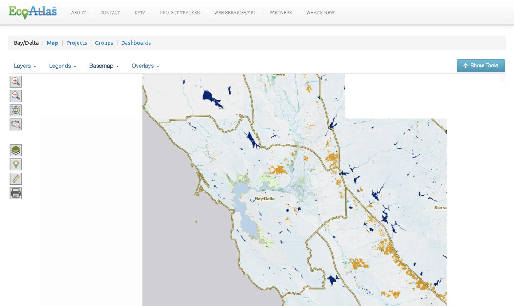
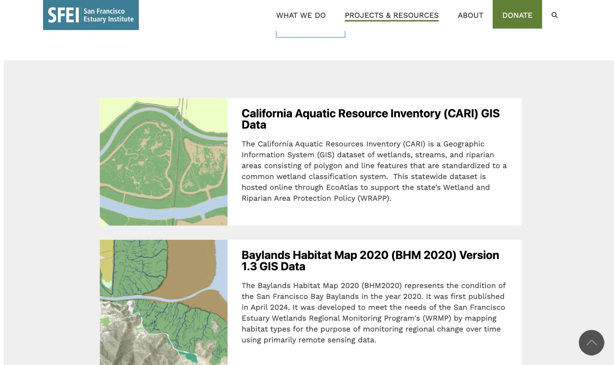

wrmp.org is where the region's monitoring story is told. EcoAtlas and the Geospatial Data Catalog are where the maps and data behind that story live. Connecting them well is a matter of handoff — sending a visitor from a finding to the exact map or dataset beneath it, without making them start their search over. These recommendations set out where those links belong and the one principle that keeps them useful: link to the specific view, never to a generic front door.
Three systems, three distinct jobs
The website and the two regional tools each do a different job, and the links between them should respect that division. The website is the front door; a visitor follows a link outward only when they want the map or the data underneath.
- wrmp.org tells the story. — A guided, plain-language view of what the monitoring shows, for a general audience.
- EcoAtlas holds the maps. — Habitat layers, project boundaries, and monitoring locations, for anyone who wants to see the geography behind a finding.
- The Geospatial Data Catalog holds the data. — Raw, downloadable datasets, for researchers and analysts who need the numbers themselves.
The handoff belongs in the data & tools drawer
Every exhibit on wrmp.org carries a data & tools panel — a drawer, one step behind the story, holding the sources the exhibit draws on. This panel is the natural place for the handoff. From it, a visitor can open the exact map in EcoAtlas, download the exact dataset from the Catalog, or read the source report at the relevant section.
Each link carries its context. Explore in EcoAtlas does not drop the visitor at the EcoAtlas homepage; it opens the wetland habitat layer, centered on the marsh the exhibit just described.
Link to the specific view, never a generic front door
The difference between a link that helps and a link that frustrates is whether it carries the visitor's place with it. A link to the EcoAtlas homepage asks the visitor to rebuild, by hand, the map the exhibit already showed them. A link to the specific layer and extent hands them that map directly.
Every outbound link opens a specific view.
EcoAtlas and the Data Catalog each address a specific region, layer, tool, or dataset directly through its URL — so a link can carry the visitor straight to the view the exhibit was showing. These are the real patterns:
ecoatlas.org/regions/ecoregion/bay-delta ecoatlas.org/regions/ecoregion/statewide/?cramt=1 sfei.org/data/wrmp-subembayments-v11The first opens the Bay/Delta map with its aquatic-resource layers; the second opens the wetland-condition (CRAM) data; the third opens a specific WRMP dataset in the catalog, ready to download. Each lands the visitor in place — not on a homepage.
Both tools already hold the WRMP's data
A link to the Bay/Delta region in EcoAtlas opens the aquatic-resource map — tidal marsh, managed habitats, and the program's own Operational Landscape Units and subembayments, drawn across the whole estuary.

ecoatlas.org/regions/ecoregion/bay-delta.
A link to the Data Catalog opens the matching dataset, ready to download — including maps built for the WRMP, such as the Baylands Habitat Map 2020.

Each link opens a map layer or a dataset
The pattern is the same for both tools — a direct link to a specific view — but what travels differs. EcoAtlas carries a map; the Catalog carries a dataset.
Link to a layer in place
- What it opens: the specific layer — the aquatic-resource inventory (CARI), wetland condition (CRAM), restoration Habitat Projects, or the WRMP's own Operational Landscape Units and subembayments — on the Bay/Delta map.
- Where it lives: the exhibit's data & tools drawer, the local-data box on topic pages, and the resources index.
- How it behaves: opens in a new tab, so the story stays where the visitor left it.
Link to a dataset by its address
-
What it opens: the specific dataset
behind the exhibit — the Baylands Habitat Map 2020,
CARI, or a WRMP subembayments layer — at its own stable
page (
sfei.org/data/…). - What travels with it: the dataset's citation and date, shown in the exhibit before the click, so the source is clear.
- Where it lives: the download the data action in the data & tools drawer, and the resources index.
Links live inside the story and in a browsable index
Links to EcoAtlas and the Catalog belong in two kinds of places: inside the story, where they carry context, and in a browsable index, where a visitor can reach a tool directly.
The handoff, shown in a real exhibit
In an exhibit, the handoff reads as three plain choices at the close of the story — each opening the exact map, dataset, or report behind what the visitor just saw.
Data & tools — A Decade in Alviso Marsh
CARI aquatic-resource layer, Bay/Delta — centered on Alviso Marsh
SBOTS catch data, 2010–2024 · Geospatial Data Catalog
Alviso Marsh monitoring synthesis · the community-shift section
A live exhibit, in the format that carries the handoff. The data & tools panel that closes the story is where the links to EcoAtlas and the Catalog live.
The handoffs, exhibit by exhibit
For the exhibits built so far, the links are specific and mostly ready to wire. The strongest handoffs are where an exhibit's subject is already a layer or dataset in the tools.
| Exhibit | Opens in EcoAtlas | Opens in the Data Catalog |
|---|---|---|
| The Bay: Where We're Watching |
Bay/Delta map with the WRMP subembayment &
landscape-unit framework/regions/ecoregion/bay-delta
|
WRMP Subembayments v1.1/data/wrmp-subembayments-v11
|
| A Decade in Alviso Marsh |
Aquatic-resource map (CARI), Bay/Delta — South Bay/regions/ecoregion/bay-delta
|
Baylands Habitat Map 2020/data/baylands-habitat-map-2020-…
|
| Is the Bay Keeping Up? |
Wetland condition (CRAM) data/regions/ecoregion/…/?cramt=1
|
Baylands Habitat Map 2020 — extent & condition |
| Designing the Experiment |
Bay/Delta restoration Habitat Projects/regions/ecoregion/bay-delta/projects
|
Habitat Projects data — EcoAtlas Projects Tool / API |
The species and methods exhibits — Delta Smelt, Native vs. Invasive, How We Monitor — link to the Bay/Delta map for habitat context, but their core fish-catch data is not yet published in EcoAtlas or the catalog; those handoffs point to the source report until the data is catalogued.
Linking back: from the tools to the story
So far this is a one-way trip — from the story out to the data. It is worth sending people the other way too, and the two directions serve different needs.
Returning to the story is already handled
A visitor who follows a link out from an exhibit keeps the story open: every outbound link opens in a new tab, so returning is closing the tab, not finding a way home. That needs no link inside EcoAtlas.
The opportunity is the professional audience
EcoAtlas and the Data Catalog are where regulators, land managers, and researchers already work — the professional audience the public exhibits don't naturally reach. A quiet link from the WRMP's own layers and datasets back to wrmp.org gives that audience the interpretation the raw data can't: why a pattern matters, the regional story, what the program concludes. The WRMP's layers already name wrmp.org in their descriptions — this turns a citation into a doorway.
Three natural, contextual places for the return link:
- EcoAtlas WRMP-layer panels. — On the Operational Landscape Units, Subembayments, Wetland Management Units, and Baylands Habitat Map layers, a "See the story on wrmp.org" link to the exhibit or topic that interprets them.
- Data Catalog dataset pages. — The reverse of "download the data": a "Featured on wrmp.org" link, so someone who came for the file leaves knowing the story behind it.
- EcoAtlas restoration projects. — Bay/Delta Habitat Projects link out to the WRMP's restoration exhibits.
Point the professional to the matching depth — the synthesized results on a topic page first, with the public exhibit one step further — rather than dropping them into an explainer. And keep it modest: one contextual link on the relevant page, never a banner across someone else's tool.
A note on scope
EcoAtlas and the Data Catalog are SFEI's tools, so these return links are suggestions for SFEI rather than changes to wrmp.org — offered here because a complete linkage runs both ways.
Next steps: from recommendations to working links
- Map the specific links. EcoAtlas addresses regions and tools by URL — the Bay/Delta map, the CRAM wetland-condition data, the Landscape Profile Tool — and the catalog gives each dataset a stable page. Pin the exact URL for each layer and dataset an exhibit references.
- Build the handoff into the exhibit template. Add the three data & tools links to the shared exhibit format, so every exhibit ships with the pathway rather than adding it one at a time.
- Stand up the resources index. A single page listing the tools and key datasets gives visitors a direct route in, alongside the contextual links inside the stories.